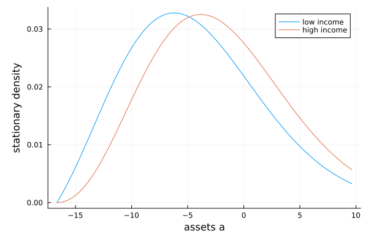

InfinitesimalGenerators
EconPDEs.jl and InfinitesimalGenerators.jl are complementary. EconPDEs.jl solves nonlinear problems — optimal policies, equilibrium prices: equations in which drifts, volatilities, or the upwind direction itself depend on the unknown solution. InfinitesimalGenerators.jl solves linear problems — stationary distributions, expectations, tail indices: given a known Markov process, it builds the generator matrix and works with it directly.
That gives two ways to combine them:
- After
pdesolve. Once the nonlinear problem is solved, the model reduces to a known Markov process — the states follow the policy-implied law of motion — andInfinitesimalGenerators.jlturns it into stationary distributions and expectations. - Instead of
pdesolve. Skip the high-level interface and useInfinitesimalGenerators.jl's derivative objects to write the nonlinear finite scheme yourself, calling the underlying solver directly.
This page shows both on the consumption–saving model with two income states. The HJB tutorial in the InfinitesimalGenerators documentation solves the same model with the same parameters from the opposite direction — building the implicit finite-difference method by hand from generator matrices, and ending with pdesolve — so the two pages can be read as mirrors of each other.
From pdesolve to a Markov process
In the two-income model, a household saves in a riskless asset $a$ while its labor income switches between $y_l$ and $y_h$ as a two-state Poisson process. The model, the grid, the guess, and the solve are exactly those of the example page and are not repeated here; the only thing that matters is that the equation returns the policy-implied asset drifts μla and μha as saved objects, so that pdesolve saves them on the grid:
using EconPDEs
using InfinitesimalGenerators
result = pdesolve(m, stategrid, guess; verbose = false)
as = stategrid[:a]
μla = result.saved[:μla]
μha = result.saved[:μha]The solved model is a Markov process on (a, y): income is a two-state Markov chain, and within each income state assets drift deterministically at the policy-implied rate. This is exactly what SwitchingProcess represents — a ContinuousTimeMarkovChain plus one continuous process per income state, here two DiffusionProcesses with zero volatility:
Z = ContinuousTimeMarkovChain([m.yl, m.yh], [-m.λlh m.λlh; m.λhl -m.λhl])
Xl = DiffusionProcess(as, μla, zeros(length(as)))
Xh = DiffusionProcess(as, μha, zeros(length(as)))
X = SwitchingProcess(Z, [Xl, Xh])
size(X)(200, 2)generator(X) is the transition-rate matrix of the discretized process, built with the same upwind convention pdesolve uses (forward differences where the drift is positive, backward where it is negative, with the same default reflecting boundaries). That consistency matters below.
Stationary distribution
The stationary distribution solves the Kolmogorov forward equation — the left null vector of the generator. stationary_distribution returns the probability mass at each grid point, shaped like the state space:
g = stationary_distribution(X)
size(g)(200, 2)Column 1 is the distribution of assets among low-income households, column 2 among high-income households. Dividing the masses by the cell widths gives a density:
using Plots
Δa = (as[[2:end; end]] .- as[[1; 1:(end - 1)]]) ./ 2
idx = as .<= 10
plot(as[idx], (g ./ Δa)[idx, :];
label = ["low income" "high income"], xlabel = "assets a", ylabel = "stationary density")
Low-income households dissave toward the borrowing limit; high-income households accumulate. Any moment of the stationary distribution is now a weighted sum:
cl = result.saved[:cl]
ch = result.saved[:ch]
mean_assets = sum(g .* as)
share_borrowers = sum(g[as .< 0, :])
aggregate_consumption = sum(g .* [cl ch])
aggregate_income = sum(g .* [fill(m.yl, length(as)) fill(m.yh, length(as))]) + m.r * mean_assets
(; mean_assets, share_borrowers, aggregate_consumption, aggregate_income)(mean_assets = -3.1674470068769924, share_borrowers = 0.7134569343105905, aggregate_consumption = 0.9049765897936906, aggregate_income = 0.90497658979369)Aggregate consumption equals aggregate income to machine precision: in the stationary distribution, average saving $E[y + ra - c]$ is zero. Getting this identity for free — rather than up to discretization error — is a consequence of computing the distribution from the same discretized generator that solved the HJB.
The division of labor is deliberate: EconPDEs.jl solves the nonlinear policy problem; InfinitesimalGenerators.jl turns the solved law of motion into a linear generator and computes distributions and expectations under it (see the expectations tutorial for feynman_kac: forecasts, present values, state-dependent discounting).
Writing the nonlinear finite scheme yourself
pdesolve is the high-level interface. It creates the derivative bundle u, applies boundary conditions, assembles the vector residual, builds a sparse Jacobian pattern, and hands the resulting nonlinear system to finiteschemesolve. If you want a lower-level version, you can skip pdesolve and construct each derivative yourself with InfinitesimalGenerators.jl's FirstDerivative, writing directly into the residual array — here for the same two-income model, with the two value functions stored as the columns of a matrix. (The HJB tutorial in the InfinitesimalGenerators documentation shows the same construction driving the classic fixed-$\Delta$ linear iteration of Achdou et al. instead of finiteschemesolve.)
function two_income_residual!(vt, m, as, v)
(; yl, yh, λlh, λhl, r, ρ, γ, amin) = m
for (j, y, λ) in ((1, yl, λlh), (2, yh, λhl))
k = 3 - j
va_up = FirstDerivative(as, view(v, :, j); direction = :forward, bc = (0, 0))
va_down = FirstDerivative(as, view(v, :, j); direction = :backward, bc = (0, 0))
for i in eachindex(as)
a = as[i]
# Guard the policy implied by the FOC; Newton can try nonpositive marginal values.
cmax = 100.0 * (y + r * max(a, 0.0))
c_up = va_up[i] > 0 ? min(va_up[i]^(-1 / γ), cmax) : cmax
μa_up = y + r * a - c_up
if μa_up >= 0.0
va, c, μa = va_up[i], c_up, μa_up
else
c_down = va_down[i] > 0 ? min(va_down[i]^(-1 / γ), cmax) : cmax
μa_down = y + r * a - c_down
if μa_down <= 0.0 && a > amin
va, c, μa = va_down[i], c_down, μa_down
else
c = y + r * a # borrowing constraint binds: drift is zero
μa = 0.0
va = c^(-γ)
end
end
vt[i, j] = -(c^(1 - γ) / (1 - γ) + μa * va + λ * (v[i, k] - v[i, j]) - ρ * v[i, j])
end
end
return vt
endfiniteschemesolve is the nonlinear solver underneath pdesolve: it takes a function that fills in the time derivative $\dot y = F(y)$ of the stacked system — here y is the matrix whose columns are the two value functions — and finds the zero of $F$ by Newton's method with pseudo-transient continuation, the algorithm described in How pdesolve finds the solution. Called on the hand-written residual, it converges to the same fixed point as the pdesolve version:
v, residual_norm = finiteschemesolve(
(ydot, y) -> two_income_residual!(ydot, m, as, y),
[guess.vl guess.vh];
verbose = false,
)
maximum(abs, v .- [result.zero[:vl] result.zero[:vh]])1.7831299103931997e-8The tradeoff is transparency for bookkeeping: you choose how to construct each derivative and write directly into the residual array, but you also lose the named derivative bundle, automatic saving of outputs, multidimensional stencil assembly, and the sparse Jacobian pattern that pdesolve constructs for one-, two-, and three-state problems.